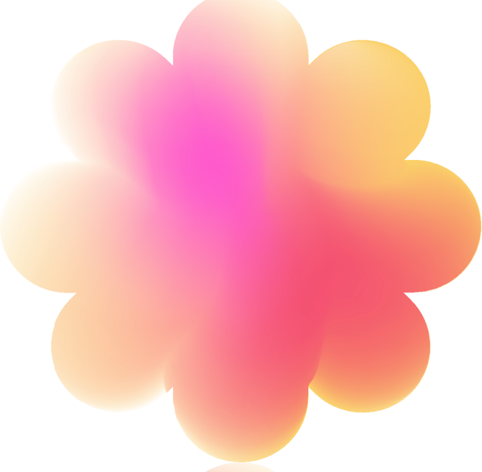

Vragenlijst
Hoe ga je om met symbolen van de overledene, zoals foto’s of persoonlijke bezittingen?
Ik vermijd ze omdat ze het verlies te echt maken
Ze maken me emotioneel, maar ik heb moeite om ze weg te doen
Ik ben bezig een balans te vinden tussen vasthouden en loslaten
Ik kan er met een positief gevoel naar kijken en bewaar ze als dierbare herinneringen
